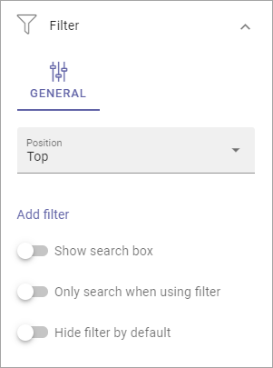
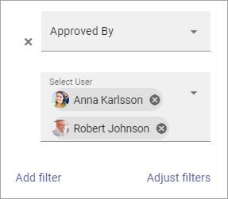

Filter UI¶
Here’s a general description on how to add filters for a block, when the option is available. Here, all options are describe, even if all is not available everywhere.
The first step is:
Position: Choose where to place the filters; Top, Left or Right.
Add filter: To add filters, click this link. See below for more information.
Show Search Box: To add a search box, select this option. You can do that without adding filters.
Only search when using filter: If you select this option the list is empty when the user enters the page. The user must choose a filter for the search to be executed.
Hide filter by default: If you chose a search box you can select this option. Then no filters are shown until users has executed a search and got a search result.
Settings for search box¶
If you added a Search Box a number of options becomes available under STYLE:

The options should be fairly self explanatory.
Add filter¶
To add filters, do the following:
Click Add filter.
Open the list and add a property to filter on.
It can be a quite long list. You can press any key to go that part of the list, for example P to go to properties starting with Page.
Some properties may have additional options, which you normally can choose (not mandatory) for more detailed filter options. Here’s an example:
In this example users can select either Anna or Robert as Approved By.
Continue adding filters until you’re done.
If you added several filters, select Adjust Filters the decide the order.